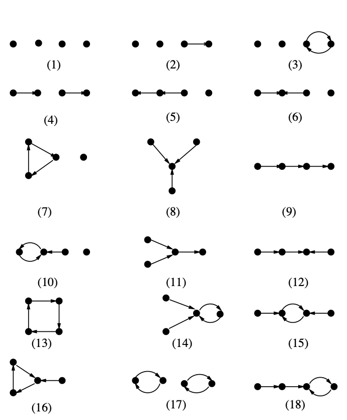
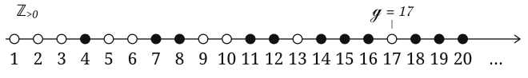

Boolean Monomial Dynamics
Elspas's 1959 analysis of linear sequential networks relates periodic behavior to matrix algebra over finite fields [1]. Nonlinear updates generally lack this linear description. Boolean monomial systems retain enough structure to study their transients through directed walks, connecting the problem to primitive matrices and the arithmetic of cycle lengths.

Every finite state space consists of cycles with directed trees feeding into them, as illustrated below. The maximum transient length \(T(f)\) is the greatest distance along an orbit to its eventual cycle. Recovering this quantity from the update rule avoids enumerating all \(2^n\) states of an \(n\)-variable Boolean system.

This reduction is possible for a Boolean monomial system with nonzero squarefree monomial coordinates over \(\mathbb F_2\). Its dependency graph \(D_f\) has vertex set \(\{1,\ldots,n\}\) and a directed edge \(j\to i\) if and only if \(x_j\mid f_i\). Under iteration, \(x_j\mid(f^m)_i\) if and only if a directed walk of length \(m\) joins \(j\) to \(i\) [3]. Equivalently, the ordinary integer power of the adjacency matrix satisfies \((A^m)_{ij}>0\). Matrix powers encode dependencies rather than linearize the update.

The transient is therefore governed by the lengths at which dependencies occur. Strong connectivity ensures reachability, but walk lengths may still be restricted to residue classes. The graph is primitive when it is strongly connected and its cycle lengths have gcd \(1\). Its exponent \(\gamma(D_f)\) is the least power for which every matrix entry is positive [7]. For such dependency graphs, \(T(f)=\gamma(D_f)\) [5]. At this time every coordinate depends on every initial variable, sending each state containing a zero to the all-zero fixed point.

Estimating this exponent requires understanding how traversing cycles supplies additional steps. In a primitive graph, the cycle lengths generate a numerical semigroup \(\Gamma=\langle c_1,\ldots,c_k\rangle\) [4]. Its largest gap is the Frobenius number \(g\), with \(g=-1\) when there are no gaps. For two coprime generators \(a,b>1\), Sylvester's formula gives \(g=ab-a-b\) [8].

The Frobenius number controls these numerical gaps, while directed distance accounts for travel between vertices. Combining them gives the diameter-based estimates recorded in the 2024 poster [6], where diameter is the greatest directed shortest-path distance.
Determining their valid hypotheses requires accounting for travel between cycles. A numerical combination of cycle lengths need not give a walk between prescribed endpoints. This distinction is the main obstacle to converting Frobenius estimates into transient bounds.
References
- B. Elspas, “The theory of autonomous linear sequential networks,” IRE Transactions on Circuit Theory 6 (1959), 45–60. Paper
- R. Laubenbacher and B. Pareigis, “Equivalence relations on finite dynamical systems,” Advances in Applied Mathematics 26 (2001), 237–251. Paper
- O. Colón-Reyes, R. Laubenbacher, and B. Pareigis, “Boolean monomial dynamical systems,” Annals of Combinatorics 8 (2005), 425–439. Paper · DOI
- J. L. Ramírez Alfonsín and Ø. J. Rødseth, “Numerical semigroups: Apéry sets and Hilbert series,” Semigroup Forum 79 (2009), 323–340. Paper
- X. Terán Batista, “Hacia una solución del problema de tiempo de transición para un sistema dinámico monomial booleano,” Ciencia e Ingeniería 4(2) (2017). Paper
- B. C. Busby, advised by O. Colón-Reyes, “On Acyclic Subgraphs and Transient Length Bounds,” research poster (2024). Poster
- A. L. Dulmage and N. S. Mendelsohn, “The exponent of a primitive matrix,” Canadian Mathematical Bulletin 5 (1962), 241–244. Paper
- M. B. Nathanson, “Commutative algebra and the linear diophantine problem of Frobenius,” Integers 18B (2018), A7. Paper